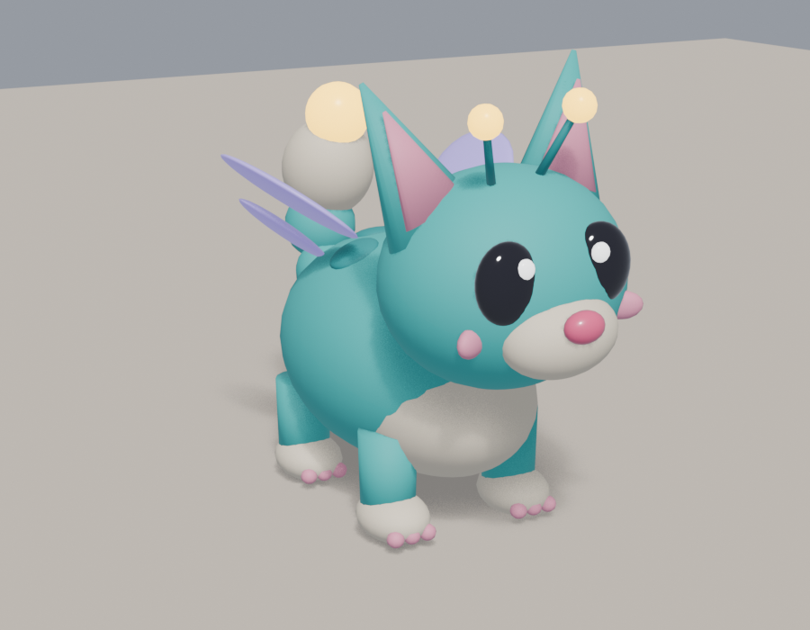

Lumino AR
Un piccolo cucciolo luminoso grande come una mano corre per la tua stanza, si arrampica sui mobili e salta giù.
⬇ Scarica l'app per il Quest (APK)
- Tocca il bottone MENÙ sul dorso della mano sinistra (guanti bianchi): personaggi Lumino/Lumina, seguimi, gara di bacche, opzioni
- Pizzica o stringi Lumino per prenderlo (anche con due mani ai lati); palmo in su vicino a lui e ti sale in mano
- Pizzico lontano o grilletto: lanci una bacca, Lumino corre a mangiarla
- Giochi dal menu: Gara di bacche e Difendi (ragni da far esplodere toccandoli), durata 1-3 minuti, 3 livelli
- Toccalo con il dito per accarezzarlo. Con i controller: stick premuto o A/B/X/Y apre il menu